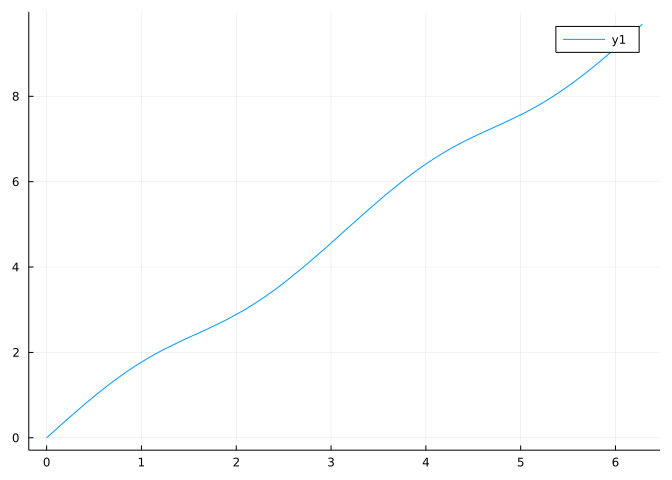

![A Figure]()
The arc length of the parametric curve can be approximated using straight line segments connecting points. This gives rise to an integral expression defining the length in terms of the functions \(f\) and \(g\).
This section uses these add-on packages:
using CalculusWithJulia
using Plots
using SymPy
using QuadGK
using Roots
The length of the jump rope in the picture can be computed by either looking at the packaging it came in, or measuring the length of each plastic segment and multiplying by the number of segments. The former is easier, the latter provides the intuition as to how we can find the length of curves in the \(x-y\) plane. The idea is old, Archimedes used fixed length segments of polygons to approximate \(\pi\) using the circumference of circle producing the bounds \(3~\frac{1}{7} > \pi > 3~\frac{10}{71}\).
A more modern application is the algorithm used by GPS devices to record a path taken. However, rather than record times for a fixed distance traveled, the GPS device records position (\((x,y)\)) or longitude and latitude at fixed units of time - similar to how parametric functions are used. The device can then compute distance traveled and speed using some familiar formulas.
Recall the distance formula gives the distance between two points: \(\sqrt{(x_1 - x_0)^2 + (y_1 - y_0)^2}\).
Consider now two functions \(g(t)\) and \(f(t)\) and the parameterized graph between \(a\) and \(b\) given by the points \((g(t), f(t))\) for \(a \leq t \leq b\). Assume that both \(g\) and \(f\) are differentiable on \((a,b)\) and continuous on \([a,b]\) and furthermore that \(\sqrt{g'(t)^2 + f'(t)^2}\) is Riemann integrable.
The arc length of a curve. For \(f\) and \(g\) as described, the arc length of the parameterized curve is given by
\(L = \int_a^b \sqrt{g'(t)^2 + f'(t)^2} dt.\)
For the special case of the graph of a function \(f(x)\) between \(a\) and \(b\) the formula becomes \(L = \int_a^b \sqrt{ 1 + f'(x)^2} dx\) (taking \(g(t) = t\)).
The form of the integral may seem daunting with the square root and the derivatives. A more general writing would create a vector out of the two functions: \(\phi(t) = \langle g(t), f(t) \rangle\). It is natural to then let \(\phi'(t) = \langle g'(t), f'(t) \rangle\). With this, the integrand is just the norm - or length - of the derivative, or \(L=\int \| \phi'(t) \| dt\). This is similar to the distance traveled being the integral of the speed, or the absolute value of the derivative of position.
To see why, any partition of the interval \([a,b]\) by \(a = t_0 < t_1 < \cdots < t_n =b\) gives rise to \(n+1\) points in the plane given by \((g(t_i), f(t_i))\).
The arc length of the parametric curve can be approximated using straight line segments connecting points. This gives rise to an integral expression defining the length in terms of the functions \(f\) and \(g\).
The distance between points \((g(t_i), f(t_i))\) and \((g(t_{i-1}), f(t_{i-1}))\) is just
\[ d_i = \sqrt{(g(t_i)-g(t_{i-1}))^2 + (f(t_i)-f(t_{i-1}))^2} \]
The total approximate distance of the curve would be \(L_n = d_1 + d_2 + \cdots + d_n\). This is exactly how we would compute the length of the jump rope or the distance traveled from GPS recordings.
However, differences, such as \(f(t_i)-f(t_{i-1})\), are the building blocks of approximate derivatives. With an eye towards this, we multiply both top and bottom by \(t_i - t_{i-1}\) to get:
\[ L_n = d_1 \cdot \frac{t_1 - t_0}{t_1 - t_0} + d_2 \cdot \frac{t_2 - t_1}{t_2 - t_1} + \cdots + d_n \cdot \frac{t_n - t_{n-1}}{t_n - t_{n-1}}. \]
But looking at each term, we can push the denominator into the square root as:
\[ \begin{align*} d_i &= d_i \cdot \frac{t_i - t_{i-1}}{t_i - t_{i-1}} \\ &= \sqrt{ \left(\frac{g(t_i)-g(t_{i-1})}{t_i-t_{i-1}}\right)^2 + \left(\frac{f(t_i)-f(t_{i-1})}{t_i-t_{i-1}}\right)^2} \cdot (t_i - t_{i-1}) \\ &= \sqrt{ g'(\xi_i)^2 + f'(\psi_i)^2} \cdot (t_i - t_{i-1}). \end{align*} \]
The values \(\xi_i\) and \(\psi_i\) are guaranteed by the mean value theorem and must be in \([t_{i-1}, t_i]\).
With this, if \(\sqrt{f'(t)^2 + g'(t)^2}\) is integrable, as assumed, then as the size of the partition goes to zero, the sum of the \(d_i\), \(L_n\), must converge to the integral:
\[ L = \int_a^b \sqrt{f'(t)^2 + g'(t)^2} dt. \]
(This needs a technical adjustment to the Riemann theorem, as we are evaluating our function at two points in the interval. A general proof is here.)
Bressoud notes that Gregory (1668) proved this formula for arc length of the graph of a function by showing that the length of the curve \(f(x)\) is defined by the area under \(\sqrt{1 + f'(x)^2}\). (It is commented that this was also known a bit earlier by von Heurat.) Gregory went further though, as part of the fundamental theorem of calculus was contained in his work. Gregory then posed this inverse question: given a curve \(y=g(x)\) find a function \(u(x)\) so that the area under \(g\) is equal to the length of the second curve. The answer given was \(u(x) = (1/c)\int_a^x \sqrt{g^2(t) - c^2}\), which if \(g(t) = \sqrt{1 + f'(t)^2}\) and \(c=1\) says \(u(x) = \int_a^x f(t)dt\).
An analogy might be a sausage maker. These take a mass of ground-up sausage material and return a long length of sausage. The material going in would depend on time via an equation like \(\int_0^t g(u) du\) and the length coming out would be a constant (accounting for the cross section) times \(u(t) = \int_0^t \sqrt{1 + g'(s)} ds\).
Let \(f(x) = x^2\). The arc length of the graph of \(f(x)\) over \([0,1]\) is then \(L=\int_0^1 \sqrt{1 + (2x)^2} dx\). A trigonometric substitution of \(2x = \sin(\theta)\) leads to the antiderivative:
@syms x
F = integrate(sqrt(1 + (2x)^2), x)F(1) - F(0)That number has some context, as can be seen from the graph, which gives simple lower and upper bounds of \(\sqrt{1^2 + 1^2} = 1.414...\) and \(1 + 1 = 2\).
f(x) = x^2
plot(f, 0, 1)
The integrand \(\sqrt{1 + f'(x)^2}\) may seem odd at first, but it can be interpreted as the length of the hypotenuse of a right triangle with “run” of \(1\) and “rise” of \(f'(x)\). This triangle is easily formed using the tangent line to the graph of \(f(x)\). By multiplying by \(dx\), the integral is “summing” up the lengths of infinitesimal pieces of the tangent line approximation.
Let \(f(t) = R\cos(t)\) and \(g(t) = R\sin(t)\). Then the parametric curve over \([0, 2\pi]\) is a circle. As the curve does not wrap around, the arc-length of the curve is just the circumference of the circle. To see that the arc length formula gives us familiar answers, we have:
\[ L = \int_0^{2\pi} \sqrt{(R\cos(t))^2 + (-R\sin(t))^2} dt = R\int_0^{2\pi} \sqrt{\cos(t)^2 + \sin(t)^2} dt = R\int_0^{2\pi} dt = 2\pi R. \]
Let \(f(x) = \log(x)\). Find the length of the graph of \(f\) over \([1/e, e]\).
The answer is
\[ L = \int_{1/e}^e \sqrt{1 + \left(\frac{1}{x}\right)^2} dx. \]
This has a messy antiderivative, so we let SymPy compute for us:
ex = integrate(sqrt(1 + (1/x)^2), (x, 1/sympy.E, sympy.E)) # sympy.E is symbolicWhich isn’t so satisfying. From a quick graph, we see the answer should be no more than 4, and we see in fact it is
N(ex)3.196198513599507A catenary shape is the shape a hanging chain will take as it is suspended between two posts. It appears elsewhere, for example, power wires will also have this shape as they are suspended between towers. A formula for a catenary can be written in terms of the hyperbolic cosine, cosh in julia or exponentials.
\[ y = a \cosh(x/a) = a \cdot \frac{e^{x/a} + e^{-x/a}}{2}. \]
Suppose we have the following chain hung between \(x=-1\) and \(x=1\) with \(a = 2\):
chain(x; a=2) = a * cosh(x/a)
plot(chain, -1, 1)
How long is the chain? Looking at the graph we can guess an answer is between \(2\) and \(2.5\), say, but it isn’t much work to get an approximate numeric answer. Recall, the accompanying CalculusWithJulia package defines f' to find the derivative using the ForwardDiff package.
quadgk(x -> sqrt(1 + chain'(x)^2), -1, 1)[1]2.0843812219749895We used a numeric approach, but this can be solved by hand and the answer is surprising.
This picture of Jasper John’s Near the Lagoon was taken at The Art Institute Chicago.

The museum notes have
For his Catenary series (1997–2003), of which Near the Lagoon is the largest and last work, Johns formed catenaries—a term used to describe the curve assumed by a cord suspended freely from two points—by tacking ordinary household string to the canvas or its supports.
This particular catenary has a certain length. The basic dimensions are \(78\)in wide and \(118\)in drop. We shift the basic function for catenaries to have \(f(78/2) = f(-78/2) = 0\) and \(f(0) = -118\) (the top curve segment is on the \(x\) axis and centered). We let our shifted function be parameterized by
\[ f(x; a, b) = a \cosh(x/a) - b. \]
Evaluating at \(0\) gives:
\[ -118 = a - b \text{ or } b = a + 118. \]
Evaluating at \(78/2\) gives: \(a \cdot \cosh(78/(2a)) - (a + 118) = 0\). This can be solved numerically for a:
cat(x; a=1, b=0) = a*cosh(x/a) - b
find_zero(a -> cat(78/2, a=a, b=118 + a), 10)12.994268574805428Rounding, we take \(a=13\). With these parameters (\(a=13\), \(b = 131\)), we compute the length of Johns’ catenary in inches:
a = 13
b = 118 + a
f(x) = cat(x; a=13, b=118+13)
quadgk(x -> sqrt(1 + f'(x)^2), -78/2, 78/2)[1]260.46474811265745Suspension bridges, like the Verrazzano-Narrows Bridge, have different loading than a cable and hence a different shape. A parabola is the shape the cable takes under uniform loading (cf. page 19 for a picture).
The Verrazzano-Narrows Bridge has a span of \(1298\)m.
Suppose the drop of the main cables is \(147\) meters over this span. Then the cable itself can be modeled as a parabola with
The parabola that fits these three points is
\[ y = \frac{-b}{a^2}(x^2 - a^2) \]
Find the length of the cable in meters.
a = 1298/2;
b = -147;
f(x) = (-b/a^2)*(x^2 - a^2);
val, _ = quadgk(x -> sqrt(1 + f'(x)^2), -a, a)
val1341.1191077638794

The nephroid is a curve that can be described parametrically by
\[ \begin{align*} g(t) &= a(3\cos(t) - \cos(3t)), \\ f(t) &= a(3\sin(t) - \sin(3t)). \end{align*} \]
Taking \(a=1\) we have this graph:
a = 1
𝒈(t) = a*(3cos(t) - cos(3t))
𝒇(t) = a*(3sin(t) - sin(3t))
plot(𝒈, 𝒇, 0, 2pi)
Find the length of the perimeter of the closed figure formed by the graph.
We have \(\sqrt{g'(t)^2 + f'(t)^2} = \sqrt{18 - 18\cos(2t)}\). An antiderivative isn’t forthcoming through SymPy, so we take a numeric approach to find the length:
quadgk(t -> sqrt(𝒈'(t)^2 + 𝒇'(t)^2), 0, 2pi)[1]23.999999999999993The answer seems like a floating point approximation of \(24\), which suggests that this integral is tractable. Pursuing this, the integrand simplifies:
\[ \begin{align*} \sqrt{g'(t)^2 + f'(t)^2} &= \sqrt{(-3\sin(t) + 3\sin(3t))^2 + (3\cos(t) - 3\cos(3t))^2} \\ &= 3\sqrt{(\sin(t)^2 - 2\sin(t)\sin(3t) + \sin(3t)^2) + (\cos(t)^2 -2\cos(t)\cos(3t) + \cos(3t)^2)} \\ &= 3\sqrt{(\sin(t)^2+\cos(t)^2) + (\sin(3t)^2 + \cos(3t)^2) - 2(\sin(t)\sin(3t) + \cos(t)\cos(3t))}\\ &= 3\sqrt{2(1 - (\sin(t)\sin(3t) + \cos(t)\cos(3t)))}\\ &= 3\sqrt{2}\sqrt{1 - \cos(2t)}\\ &= 3\sqrt{2}\sqrt{2\sin(t)^2}. \end{align*} \]
The second to last line comes from a double angle formula expansion of \(\cos(3t - t)\) and the last line from the half angle formula for \(\cos\).
By graphing, we see that integrating over \([0,2\pi]\) gives twice the answer to integrating over \([0, \pi]\), which allows the simplification to:
\[ L = \int_0^{2\pi} \sqrt{g'(t)^2 + f'(t)^2}dt = \int_0^{2\pi} 3\sqrt{2}\sqrt{2\sin(t)^2} = 3 \cdot 2 \cdot 2 \int_0^\pi \sin(t) dt = 3 \cdot 2 \cdot 2 \cdot 2 = 24. \]
A teacher of small children assigns his students the task of computing the length of a jump rope by counting the number of \(1\)-inch segments it is made of. He knows that if a student is accurate, no matter how fast or slow they count the answer will be the same. (That is, unless the student starts counting in the wrong direction by mistake). The teacher knows this, as he is certain that the length of curve is independent of its parameterization, as it is a property intrinsic to the curve.
Mathematically, suppose a curve is described parametrically by \((g(t), f(t))\) for \(a \leq t \leq b\). A new parameterization is provided by \(\gamma(t)\). Suppose \(\gamma\) is strictly increasing, so that an inverse function exists. (This assumption is implicitly made by the teacher, as it implies the student won’t start counting in the wrong direction.) Then the same curve is described by composition through \((g(\gamma(u)), f(\gamma(u)))\), \(\gamma^{-1}(a) \leq u \leq \gamma^{-1}(b)\). That the arc length is the same follows from substitution:
\[ \begin{align*} \int_{\gamma^{-1}(a)}^{\gamma^{-1}(b)} \sqrt{([g(\gamma(t))]')^2 + ([f(\gamma(t))]')^2} dt &=\int_{\gamma^{-1}(a)}^{\gamma^{-1}(b)} \sqrt{(g'(\gamma(t) )\gamma'(t))^2 + (f'(\gamma(t) )\gamma'(t))^2 } dt \\ &=\int_{\gamma^{-1}(a)}^{\gamma^{-1}(b)} \sqrt{g'(\gamma(t))^2 + f'(\gamma(t))^2} \gamma'(t) dt\\ &=\int_a^b \sqrt{g'(u)^2 + f'(u)^2} du = L \end{align*} \]
(Using \(u=\gamma(t)\) for the substitution.)
In traveling there are two natural parameterizations: one by time, as in “how long have we been driving?”; and the other by distance, as in “how far have we been driving?” Parameterizing by distance, or more technically arc length, has other mathematical advantages.
To parameterize by arc length, we just need to consider a special \(\gamma\) defined by:
\[ \gamma(u) = \int_0^u \sqrt{g'(t)^2 + f'(t)^2} dt. \]
Supposing \(\sqrt{g'(t)^2 + f'(t)^2}\) is continuous and positive, This transformation is increasing, as its derivative by the Fundamental Theorem of Calculus is \(\gamma'(u) = \sqrt{g'(u)^2 + f'(u)^2}\), which by assumption is positive. (It is certainly non-negative.) So there exists an inverse function. That it exists is one thing, computing all of this is a different matter, of course.
For a simple example, we have \(g(t) = R\cos(t)\) and \(f(t)=R\sin(t)\) parameterizing the circle of radius \(R\). The arc length between \(0\) and \(t\) is simply \(\gamma(t) = Rt\), which we can easily see from the formula. The inverse of this function is \(\gamma^{-1}(u) = u/R\), so we get the parameterization \((g(Rt), f(Rt))\) for \(0/R \leq t \leq 2\pi/R\).
What looks at first glance to be just a slightly more complicated equation is that of an ellipse, with \(g(t) = a\cos(t)\) and \(f(t) = b\sin(t)\). Taking \(a=1\) and \(b = a + c\), for \(c > 0\) we get the equation for the arc length as a function of \(t\) is just
\[ \begin{align*} s(u) &= \int_0^u \sqrt{(-\sin(t))^2 + b\cos(t)^2} dt\\ &= \int_0^u \sqrt{\sin(t))^2 + \cos(t)^2 + c\cos(t)^2} dt \\ &=\int_0^u \sqrt{1 + c\cos(t)^2} dt. \end{align*} \]
But, despite it not looking too daunting, this integral is not tractable through our techniques and has an answer involving elliptic integrals. We can work numerically though. Letting \(a=1\) and \(b=2\), we have the arc length is given by:
𝒂, 𝒃 = 1, 2
𝒔(u) = quadgk(t -> sqrt(𝒂^2 * sin(t)^2 + 𝒃^2 * cos(t)^2), 0, u)[1]𝒔 (generic function with 1 method)This has a graph, which does not look familiar, but we can see is monotonically increasing, so will have an inverse function:
plot(𝒔, 0, 2pi)
The range is \([0, s(2\pi)]\).
The inverse function can be found by solving, we use the bracketing version of find_zero for this:
sinv(u) = find_zero(x -> 𝒔(x) - u, (0, 𝒔(2pi)))sinv (generic function with 1 method)Here we see visually that the new parameterization yields the same curve:
g(t) = 𝒂 * cos(t)
f(t) = 𝒃 * sin(t)
plot(t -> g(𝒔(t)), t -> f(𝒔(t)), 0, 𝒔(2*pi))
Following (faithfully) Kantorwitz and Neumann, we consider a function \(f(x)\) with the property that both \(f\) and \(f'\) are strictly concave down on \([a,b]\) and suppose \(f(a) = f(b)\). Further, assume \(f'\) is continuous. We will see this implies facts about arc-length and other integrals related to \(f\).
The following figure is clearly of a concave down function. The asymmetry about the critical point will be seen to be a result of the derivative also being concave down. This asymmetry will be characterized in several different ways in the following including showing that the arc length from \((a,0)\) to \((c,f(c))\) is longer than from \((c,f(c))\) to \((b,0)\).

Take \(a < u < c < v < b\) with \(f(u) = f(v)\) and \(c\) a critical point, as in the picture. There must be a critical point by Rolle’s theorem, and it must be unique, as the derivative, which exists by the assumptions, must be strictly decreasing due to concavity of \(f\) and hence there can be at most \(1\) critical point.
Some facts about this picture can be proven from the definition of concavity:
The slope of the tangent line at \(u\) goes up slower than the slope of the tangent line at \(v\) declines: \(f'(u) < -f'(v)\).
Since \(f'\) is strictly concave, we have for any \(a<u<v<b\) from the definition of concavity that for all \(0 \leq t \leq 1\)
\[ tf'(u) + (1-t)f'(v) < f'(tu + (1-t)v). \]
So
\[ \begin{align*} \int_0^1 (tf'(u) + (1-t)f'(v)) dt &< \int_0^1 f'(tu + (1-t)v) dt, \text{or}\\ \frac{f'(u) + f'(v)}{2} &< \frac{1}{v-u}\int_u^v f'(w) dw, \end{align*} \]
by the substitution \(w = tu + (1-t)v\). Using the fundamental theorem of calculus to compute the mean value of the integral of \(f'\) over \([u,v]\) gives the following as a consequence of strict concavity of \(f'\):
\[ \frac{f'(u) + f'(v)}{2} < \frac{f(v)-f(u)}{v-u} \]
The above is true for any \(u\) and \(v\), but, by assumption our \(u\) and \(v\) under consideration have \(f(u) = f(v)\), hence it must be \(f'(u) < -f'(v)\).
The critical point is greater than the midpoint between \(u\) and \(v\): \((u+v)/2 < c\).
The function \(f\) restricted to \([a,c]\) and \([c,b]\) is strictly monotone, as \(f'\) only changes sign at \(c\). Hence, there are inverse functions, say \(f_1^{-1}\) and \(f_2^{-1}\) taking \([0,m]\) to \([a,c]\) and \([c,b]\) respectively. The inverses are differentiable, as \(f'\) exists, and must satisfy: \([f_1^{-1}]'(y) > 0\) (as \(f'\) is positive on \([a,c]\)) and, similarly, \([f_2^{-1}]'(y) < 0\). By the previous result, the inverses also satisfy:
\[ [f_1^{-1}]'(y) > -[f_2^{-1}]'(y) \]
(The inequality reversed due to the derivative of the inverse function being related to the reciprocal of the derivative of the function.)
For any \(0 \leq \alpha < \beta \leq m\) we have:
\[ \int_{\alpha}^{\beta} ([f_1^{-1}]'(y) +[f_2^{-1}]'(y)) dy > 0 \]
By the fundamental theorem of calculus:
\[ (f_1^{-1}(y) + f_2^{-1}(y))\big|_\alpha^\beta > 0 \]
On rearranging:
\[ f_1^{-1}(\alpha) + f_2^{-1}(\alpha) < f_1^{-1}(\beta) + f_2^{-1}(\beta) \]
That is \(f_1^{-1} + f_2^{-1}\) is strictly increasing.
Taking \(\beta=m\) gives a bound in terms of \(c\) for any \(0 \leq \alpha < m\):
\[ f_1^{-1}(\alpha) + f_2^{-1}(\alpha) < 2c. \]
The result comes from setting \(\alpha=f(u)\); setting \(\alpha=0\) shows the result for \([a,b]\).
The intersection point of the two tangent lines, \(d\), satisfies \((u+v)/2 < d\).
If \(f(u) = f(v)\), the previously established relationship between the slopes of the tangent lines suggests the answer. However, this statement is actually true more generally, with just the assumption that \(u < v\) and not necessarily that \(f(u)=f(v)\).
Solving for \(d\) from equations of the tangent lines gives
\[ d = \frac{f(v)-f(u) + uf'(u) - vf'(v)}{f'(u) - f'(v)} \]
So \((u+v)/2 < d\) can be re-expressed as
\[ \frac{f'(u) + f'(v)}{2} < \frac{f(v) - f(u)}{v-u} \]
which holds by the strict concavity of \(f'\), as found previously.
Let \(h=f(u)\). The areas under \(f\) are such that there is more area in \([a,u]\) than \([v,b]\) and more area under \(f(x)-h\) in \([u,c]\) than \([c,v]\). In particular more area under \(f\) over \([a,c]\) than \([c,b]\).
Using the substitution \(x = f_i^{-1}(u)\) as needed to see:
\[ \begin{align*} \int_a^u f(x) dx &= \int_0^{f(u)} u [f_1^{-1}]'(u) du \\ &> -\int_0^h u [f_2^{-1}]'(u) du \\ &= \int_h^0 u [f_2^{-1}]'(u) du \\ &= \int_v^b f(x) dx. \end{align*} \]
For the latter claim, integrating in the \(y\) variable gives
\[ \begin{align*} \int_u^c (f(x)-h) dx &= \int_h^m (c - f_1^{-1}(y)) dy\\ &> \int_h^m (c - f_2^{-1}(y)) dy\\ &= \int_c^v (f(x)-h) dx \end{align*} \]
Now, the area under \(h\) over \([u,c]\) is greater than that over \([c,v]\) as \((u+v)/2 < c\) or \(v-c < c-u\). That means the area under \(f\) over \([u,c]\) is greater than that over \([c,v]\).
There is more arc length for \(f\)over \([a,u]\) than \([v,b]\); more arc length for \(f\) over \([u,c]\) than \([c,v]\). In particular more arc length over \([a,c]\) than \([c,b]\).
let \(\phi(z) = f_2^{-1}(f_1(z))\) be the function taking \(u\) to \(v\), and \(a\) to \(b\) and moreover the interval \([a,u]\) to \([v,b]\). Further, \(f(z) = f(\phi(z))\). The function is differentiable, as it is a composition of differentiable functions and for any \(a \leq z \leq u\) we have
\[ f'(\phi(z)) \cdot \phi'(z) = f'(z) < 0 \]
or \(\phi'(z) < 0\). Moreover, we have by the first assertion that \(f'(z) < -f'(\phi(z))\) so \(|\phi'(z)| = |f(z)/f'(\phi(z))| < 1\).
Using the substitution \(x = \phi(z)\) gives:
\[ \begin{align*} \int_v^b \sqrt{1 + f'(x)^2} dx &= \int_u^a \sqrt{1 + f'(\phi(z))^2} \phi'(z) dz\\ &= \int_a^u \sqrt{1 + f'(\phi(z))^2} |\phi'(z)| dz\\ &= \int_a^u \sqrt{\phi'(z)^2 + (f'(\phi(z))\phi'(z))^2} dz\\ &= \int_a^u \sqrt{\phi'(z)^2 + f'(z)^2} dz\\ &< \int_a^u \sqrt{1 + f'(z)^2} dz \end{align*} \]
Letting \(h=f(u) \rightarrow c\) we get the inequality
\[ \int_c^b \sqrt{1 + f'(x)^2} dx \leq \int_a^c \sqrt{1 + f'(x)^2} dx, \]
which must also hold for any paired \(u,v=\phi(u)\). This allows the use of the strict inequality over \([v,b]\) and \([a,u]\) to give:
\[ \int_c^b \sqrt{1 + f'(x)^2} dx < \int_a^c \sqrt{1 + f'(x)^2} dx, \]
which would also hold for any paired \(u, v\).
Now, why is this of interest. Previously, we have considered the example of the trajectory of an arrow on a windy day given in function form by:
\[ f(x) = \left(\frac{g}{k v_0\cos(\theta)} + \tan(\theta) \right) x + \frac{g}{k^2}\log\left(1 - \frac{k}{v_0\cos(\theta)} x \right) \]
This comes from solving the projectile motion equations with a drag force proportional to the velocity. This function satisfies:
@syms gₑ::postive, k::postive, v₀::positive, θ::postive, x::postive
ex = (gₑ/(k*v₀*cos(θ)) + tan(θ))*x + gₑ/k^2 * log(1 - k/(v₀*cos(θ))*x)
diff(ex, x, x), diff(ex, x, x, x,)(-gₑ/(v₀^2*(k*x/(v₀*cos(θ)) - 1)^2*cos(θ)^2), 2*gₑ*k/(v₀^3*(k*x/(v₀*cos(θ)) - 1)^3*cos(θ)^3))Both the second and third derivatives are negative (as \(0 \leq x < (v_0\cos(\theta))/k\) due to the logarithm term), so, both \(f\) and \(f'\) are strictly concave down. Hence the results above apply. That is the arrow will fly further as it goes up, than as it comes down and will carve out more area on its way up, than its way down. The trajectory could also show time versus height, and the same would hold, e.g, the arrow would take longer to go up than come down.
In general, the drag force need not be proportional to the velocity, but merely in opposite direction to the velocity vector \(\langle x'(t), y'(t) \rangle\):
\[ -m W(t, x(t), x'(t), y(t), y'(t)) \cdot \langle x'(t), y'(t)\rangle, \]
with the case above corresponding to \(W = -m(k/m)\). The set of equations then satisfy:
\[ \begin{align*} x''(t) &= - W(t,x(t), x'(t), y(t), y'(t)) \cdot x'(t)\\ y''(t) &= -g - W(t,x(t), x'(t), y(t), y'(t)) \cdot y'(t)\\ \end{align*} \]
with initial conditions: \(x(0) = y(0) = 0\) and \(x'(0) = v_0 \cos(\theta), y'(0) = v_0 \sin(\theta)\).
Only with certain drag forces, can this set of equations be be solved exactly, though it can be approximated numerically for admissible \(W\), but if \(W\) is strictly positive then it can be shown \(x(t)\) is increasing on \([0, x_\infty)\) and so invertible, and \(f(u) = y(x^{-1}(u))\) is three times differentiable with both \(f\) and \(f'\) being strictly concave, as it can be shown that (say \(x(v) = u\) so \(dv/du = 1/x'(v) > 0\)):
\[ \begin{align*} f''(u) &= -\frac{g}{x'(v)^2} < 0\\ f'''(u) &= \frac{2gx''(v)}{x'(v)^3} \\ &= -\frac{2gW}{x'(v)^2} \cdot \frac{dv}{du} < 0 \end{align*} \]
The latter by differentiating, the former a consequence of the following formulas for derivatives of inverse functions
\[ \begin{align*} [x^{-1}]'(u) &= 1 / x'(v) \\ [x^{-1}]''(u) &= -x''(v)/(x'(v))^3 \end{align*} \]
For then
\[ \begin{align*} f(u) &= y(x^{-1}(u)) \\ f'(u) &= y'(x^{-1}(u)) \cdot {x^{-1}}'(u) \\ f''(u) &= y''(x^{-1}(u))\cdot[x^{-1}]'(u)^2 + y'(x^{-1}(u)) \cdot [x^{-1}]''(u) \\ &= y''(v) / (x'(v))^2 - y'(v) \cdot x''(v) / x'(v)^3\\ &= -g/(x'(v))^2 - W y'/(x'(v))^2 - y'(v) \cdot (- W \cdot x'(v)) / x'(v)^3\\ &= -g/x'(v)^2. \end{align*} \]
The length of the curve given by \(f(x) = e^x\) between \(0\) and \(1\) is certainly longer than the length of the line connecting \((0, f(0))\) and \((1, f(1))\). What is that length?
The length of the curve is certainly less than the length of going from \((0,f(0))\) to \((1, f(0))\) and then up to \((1, f(1))\). What is the length of this upper bound?
Now find the actual length of the curve numerically:
Find the length of the graph of \(f(x) = x^{3/2}\) between \(0\) and \(4\).
A pursuit curve is a track an optimal pursuer will take when chasing prey. The function \(f(x) = x^2 - \log(x)\) is an example. Find the length of the curve between \(1/10\) and \(2\).
Find the length of the graph of \(f(x) = \tan(x)\) between \(-\pi/4\) and \(\pi/4\).
Note, the straight line segment should be a close approximation and has length:
sqrt((tan(pi/4) - tan(-pi/4))^2 + (pi/4 - -pi/4)^2)2.543108550627035Find the length of the graph of the function \(g(x) =\int_0^x \tan(x)dx\) between \(0\) and \(\pi/4\) by hand or numerically:
A boat sits at the point \((a, 0)\) and a man holds a rope taut attached to the boat at the origin \((0,0)\). The man walks on the \(y\) axis. The position \(y\) depends then on the position \(x\) of the boat, and if the rope is taut, the position satisfies:
\[ y = a \ln\frac{a + \sqrt{a^2 - x^2}}{x} - \sqrt{a^2 - x^2} \]
This can be entered into julia as:
h(x, a) = a * log((a + sqrt(a^2 - x^2))/x) - sqrt(a^2 - x^2)h (generic function with 2 methods)Let \(a=12\), \(f(x) = h(x, a)\). Compute the length the bow of the boat has traveled between \(x=1\) and \(x=a\) using quadgk.
(The most elementary description of this curve is in terms of the relationship \(dy/dx = -\sqrt{a^2-x^2}/x\) which could be used in place of D(f) in your work.)
To see an example of how the tractrix can be found in an everyday observation, follow this link on a description of bicycle tracks.
SymPy fails with the brute force approach to finding the length of a catenary, but can with a little help:
@syms x::real a::real
f(x,a) = a * cosh(x/a)
inside = 1 + diff(f(x,a), x)^2Just trying integrate(sqrt(inside), x) will fail, but if we try integrate(sqrt(simplify(inside), x)) an antiderivative can be found. What is it?
A curve is parameterized by \(g(t) = t + \sin(t)\) and \(f(t) = \cos(t)\). Find the arc length of the curve between \(t=0\) and \(\pi\).
The astroid is a curve parameterized by \(g(t) = \cos(t)^3\) and \(f(t) = \sin(t)^3\). Find the arc length of the curve between \(t=0\) and \(2\pi\). (This can be computed by hand or numerically.)
A curve is parameterized by \(g(t) = (2t + 3)^{2/3}/3\) and \(f(t) = t + t^2/2\), for \(0\leq t \leq 3\). Compute the arc-length numerically or by hand:
The cycloid is parameterized by \(g(t) = a(t - \sin(t))\) and \(f(t) = a(1 - \cos(t))\) for \(a > 0\). Taking \(a=3\), and \(t\) in \([0, 2\pi]\), find the length of the curve traced out. (This was solved by the architect and polymath Wren in 1650.)
A cycloid parameterized this way can be generated by a circle of radius \(a\). Based on this example, what do you think Wren wrote to Pascal about this length:
In Martin we read why Wren was mailing Pascal:
After demonstrating mathematical talent at an early age, Blaise Pascal turned his attention to theology, denouncing the study of mathematics as a vainglorious pursuit. Then one night, unable to sleep as the result of a toothache, he began thinking about the cycloid and to his surprise, his tooth stopped aching. Taking this as a sign that he had God’s approval to continue, Pascal spent the next eight days studying the curve. During this time he discovered nearly all of the geometric properties of the cycloid. He issued some of his results in \(1658\) in the form of a contest, offering a prize of forty Spanish gold pieces and a second prize of twenty pieces.